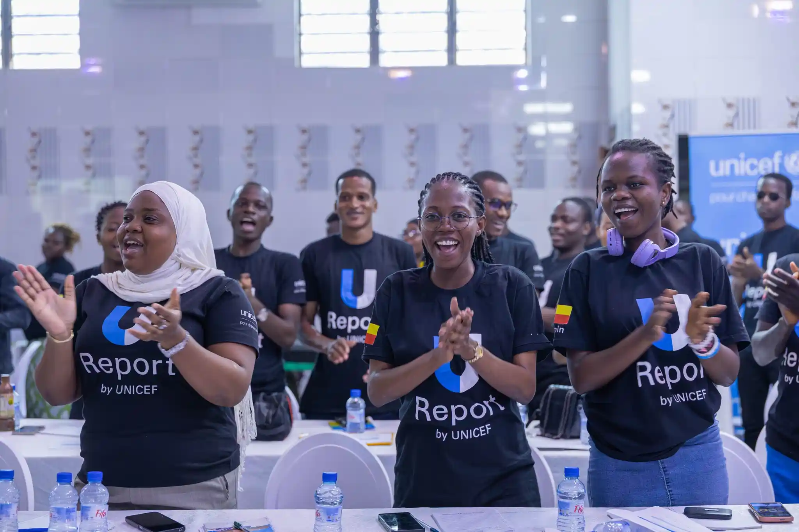
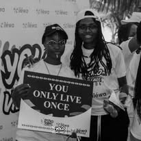

Belvine Kybarance TOCLOE, animatrice Bénin et communicatrice Grand-Popo, partage son parcours entre journalisme, engagements sociaux et création événementielle.
Formation ⟶ Engagement ⟶ Cinéma ⟶ Entrepreneuriat
Mon parcours académique a forgé ma plume et ma rigueur. À l’UCAE, j’ai appris que l’information est une responsabilité. C’est là que j’ai compris le pouvoir des mots pour éclairer, relier, transformer.
Porter la voix des sans-voix. Avec UReport et la Mairie des Jeunes, je m’engage sur le terrain. Société civile, plaidoyer, actions concrètes : mon énergie va là où l’impact est réel, auprès de la jeunesse béninoise.

Animatrice live, régisseuse plateau, passeuse d’émotions. La scène m’a appris le direct, l’écoute, la gestion du rythme. Chaque événement est une histoire qu’on écrit ensemble, en temps réel, avec le public.
Vision : Un Bénin où l’innovation respecte la terre.
Mission : Proposer des alternatives durables aux plastiques.
Impact : Chaque emballage vendu est un geste pour l’environnement et pour l’emploi local.

Synnova Belvine est un mur qui tient sur quatre piliers :
la Création ⟶ l'Engagement ⟶ l'Authenticité ⟶ Impact